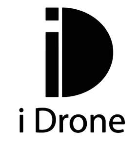

Trade Mark Journal No.2026/010 6 March 2026
UK00004338981 11 February 2026 (7,21,35)

- Class 7
- Electrical hand tools; Steam cleaners for household purposes; Sweeping machines; Vacuum cleaners; Incubators for eggs; Electric sharpeners; Electric shearing machines; Lapping machines; Machines for burnishing; Blenders, electric, for household purposes; Crushers for kitchen use, electric; Electric egg beaters; Electric food blenders; Electric food choppers; Electric kitchen tools; Electromechanical machines for food or beverage preparation; Meat mincing machines [electric machines]; Power-operated coffee grinders; Screwdrivers, electric; Housekeeping robots for household purpose.
- Class 21
- Electronic pet feeders; Abrasive instruments for kitchen [cleaning] purposes; Toothbrushes; Toothpicks; Cosmetic utensils; Electric combs; Make-up removing appliances; Bottle openers, electric and non-electric; Corkscrews, electric and non-electric; Cup holders; Baking utensils; Blenders, non-electric, for household purposes; Coffee grinders; Containers for household or kitchen use; Cooking utensils, non-electric; Coupes; Crushers for kitchen use, non-electric; Household containers; Household or kitchen utensils; Whisks.
- Class 35
- Advertising; Advertising and marketing; Presentation of companies and their goods and services on the Internet; Providing a searchable online advertising guide featuring the goods and services of other on-line vendors on the internet; Commercial information services; Market research and business analyses; Providing information about commercial business and commercial information via the global computer network; Business administration and management; Business organisation; Providing assistance in the management of franchised businesses; Provision of business and commercial contact information via the Internet; Import and export services; Procurement services for others [purchasing goods and services for other businesses]; Organisation of exhibitions for business or commerce; Business organization and management consultancy including personnel management; Management advisory services related to franchising; Online retail services relating to toys; Retail services in relation to toys; Wholesale services for pharmaceutical, veterinary and sanitary preparations and medical supplies; Provision of an on-line marketplace for buyers and sellers of goods and services.
Shantou Fubo Trading Co., Ltd.
Representative: Baiyi Xu